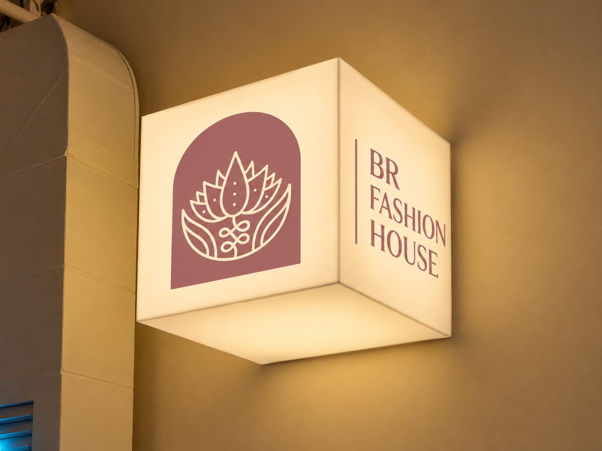
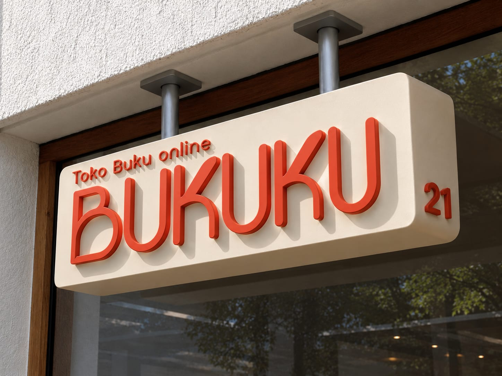
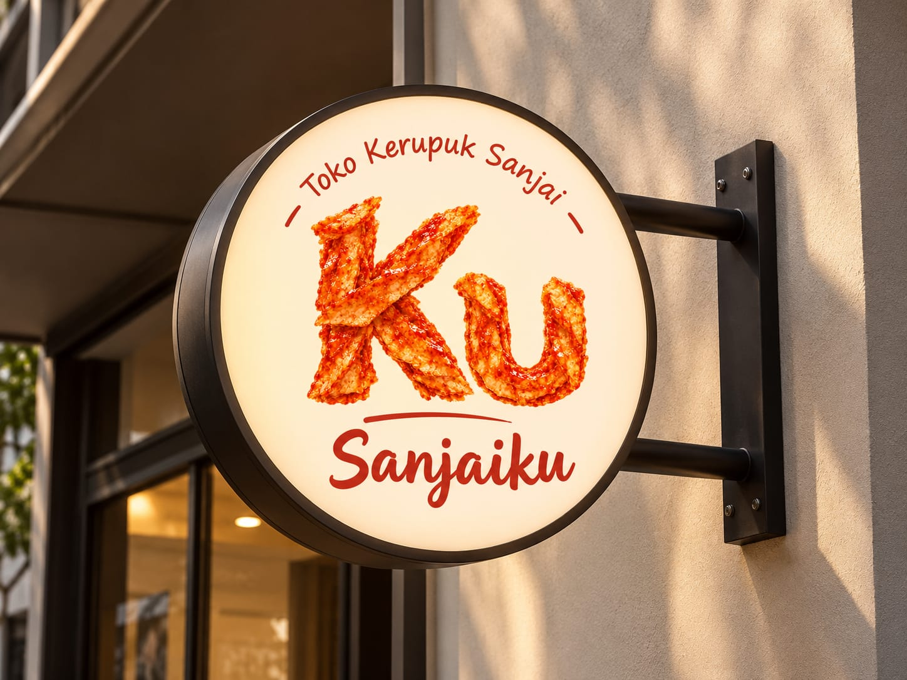
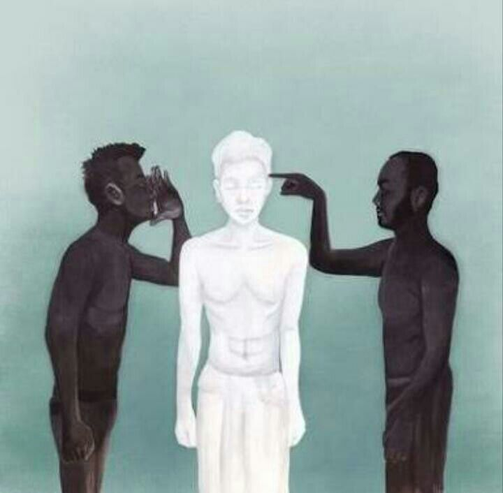

Dashboard admin e-commerce fashion — kartu statistik, pesanan terbaru, alert stok menipis, dan redesain halaman transaksi dengan sistem voucher dan kalkulasi total otomatis.

Progres Pengembangan95%
WELCOME TO MY PORTFOLIO
Siswa SMK jurusan PPLG yang fokus membangun aplikasi web dengan Laravel. Dari dashboard admin, sistem transaksi, sampai landing page untuk bisnis kecil.
Geser kartu untuk melihat interaksi

Siswa SMK jurusan PPLG yang fokus membangun aplikasi web dengan Laravel. Dari dashboard admin, sistem transaksi, sampai landing page untuk bisnis kecil.
Saya adalah siswa SMK jurusan PPLG yang sedang menjalani magang sebagai web developer, dengan fokus utama pada pengembangan aplikasi berbasis Laravel.
Saya suka merapikan alur kerja yang berantakan jadi tampilan yang jelas dan enak dipakai — baik untuk pengguna maupun tim internal.
Lihat Selengkapnya →Beberapa proyek yang saya kerjakan selama magang dan pengembangan pribadi.
Dashboard admin e-commerce fashion — kartu statistik, pesanan terbaru, alert stok menipis, dan redesain halaman transaksi dengan sistem voucher dan kalkulasi total otomatis.

Aplikasi toko buku yang dirancang untuk memudahkan pengguna dalam mencari buku, melakukan pemesanan dengan sistem pre-order,serta melihat riwayat pesanan.

Website untuk bisnis kerupuk Sanjai, lengkap dengan landing page bernuansa budaya Minang — motif songket, gonjong, dan empat varian produk dengan CTA WhatsApp.

Seperti lagu Hitam Putih, terkadang hidup tidak sesederhana memilih antara benar dan salah. Ada cerita yang tak semua orang mengerti, ada pilihan yang tak semua orang setujui, dan ada perjalanan yang hanya bisa kita pahami setelah melewatinya sendiri.DAMN BRO

Terbuka untuk kolaborasi proyek, magang lanjutan, atau sekadar diskusi soal Laravel dan web development.